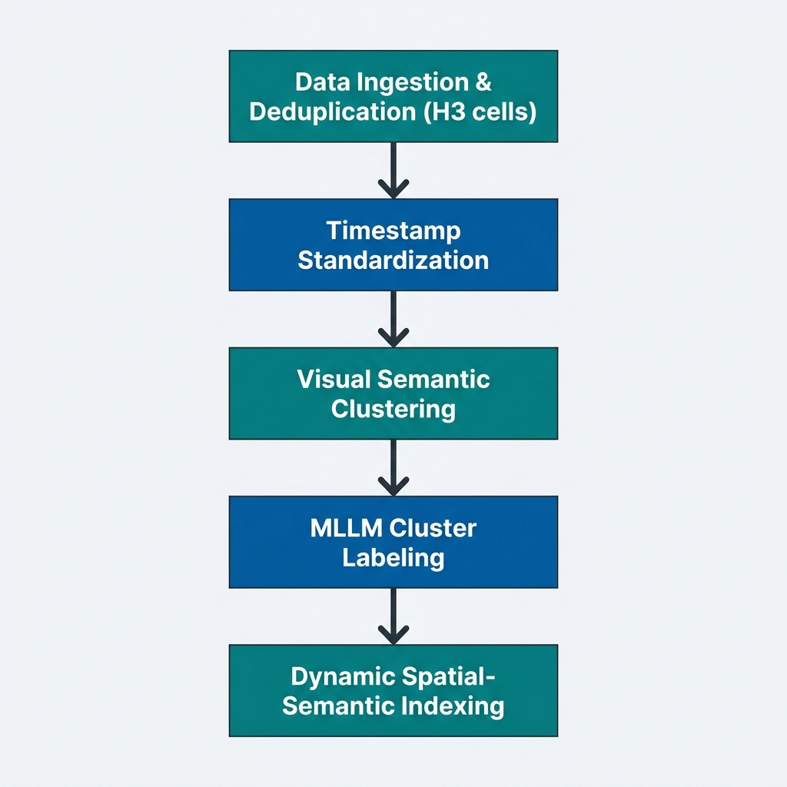

Geo-RAG Pipeline Guide & Architecture
This document serves as the master overview and index for the Geo-RAG spatial-semantic data engineering, clustering, and mapping pipeline.
🗺️ 1. Pipeline Overview & Architecture
The pipeline is designed to ingest raw street-level and outdoor image databases, deduplicate them spatially, cluster them semantically using image embeddings, auto-label clusters using Multi-Modal LLMs (MLLMs), and build interactive web visualizations.

⚙️ 2. Pipeline Walkthrough & Stages
Detailed documentation for each stage of the pipeline can be found in the sub-guides below:
| Stage | Script / Utility | Core Responsibility | Details |
|---|---|---|---|
| 01. Ingestion & Scraping | src/scrapers/* |
Flickr, Mapillary, KartaView and iNaturalist scraping, spatial difference masking. | Detailed Guide ➡️ |
| 02. Spatial Deduplication | process_scraped_data.py |
H3 Resolution 11 grouping, single-pass feature extraction, decoupled .npy format, VRAM streaming updates. |
Detailed Guide ➡️ |
| 03. Timestamp Standardization | standardize_timestamps.py |
Capture datetime normalization, climate zoning, boundary country snapping, EPSG:3857 coastal buffer. | Detailed Guide ➡️ |
| 04. Coordinate Anomaly Cleanup | cleanup_coordinate_anomalies.py |
locked-latitude parallel GPS glitch purges. | Detailed Guide ➡️ |
| 05. Optimal k Estimation | validate_cluster_count.py |
Spatial Block Hold-Out validation, reconstruction loss curves, Elbow heuristic estimation. | Detailed Guide ➡️ |
| 06. Global GPU Clustering | cluster_images_global.py |
Semantic drift outlier tracking, fit vs assign decisioning, FAISS Spherical child clustering & resampling-aware parent hierarchy. | Detailed Guide ➡️ |
| 07. MLLM Cluster Labeling | label_clusters_mllm.py |
Nvidia Docker SGLang lifecycle manager, multi-medoid film-strip collages, visual description prompting, text ecological categorization. | Detailed Guide ➡️ |
| 08. Spatial-Semantic Indexing | build_spatial_semantic_index.py |
H3 multi-resolution spatial index aggregation. | Detailed Guide ➡️ |
| 09. Visualization Dashboards | src/visualization/* |
Leaflet density/semantic maps, WebGL UMAP projections, HTML grids, and reports. | Detailed Guide ➡️ |
💾 3. Data Versioning (DVC)
To handle heavy files (Parquet databases, HTML maps, images), run_full_pipeline.sh implements autonomous DVC standalone tracking:
- HDD Storage: Outputs are written to a fast SSD, then backed up to a high-capacity HDD directory tracked by DVC.
- Push: Pushes heavy data to remote storage using
dvc push. - Git Sync: Copies the updated
.dvctracking files back to the SSD Git repository, automatically commits them, and pushes them to track repository state changes.
📚 4. Literature & Software References
- Brodsky, A. (2018). H3: Uber's Hexagonal Hierarchical Spatial Index. Uber Engineering. https://h3geo.org
- Dhillon, I. S., & Modha, D. S. (2001). Concept decompositions for large sparse text document collections with applications to high-dimensional clustering. Machine Learning, 42(1), 143–175.
- Johnson, J., Douze, M., & Jégou, H. (2019). Billion-scale similarity search with GPUs. IEEE Transactions on Big Data, 7(3), 535–547.
- McInnes, L., Healy, J., & Melville, J. (2018). UMAP: Uniform Manifold Approximation and Projection for Dimension Reduction. arXiv preprint arXiv:1802.03426.
- Cao, B., Chen, K., Maninis, K. K., Chen, K., Karpur, A., Xia, Y., ... & Araujo, A. (2026). Tipsv2: Advancing vision-language pretraining with enhanced patch-text alignment. CVPR 2026.
- Sculley, D. (2010). Web-scale k-means clustering. In Proceedings of the 19th International Conference on World Wide Web (pp. 1177–1178).
- Thorndike, R. L. (1953). Who belongs in the family? Psychometrika, 18(4), 267–276.
- Tobler, W. R. (1970). A computer movie simulating urban growth in the Detroit region. Economic Geography, 46(sup1), 234–240.
- Beck, H. E., T. R. McVicar, N. Vergopolan, A. Berg, N. J. Lutsko, A. Dufour, Z. Zeng, X. Jiang, A. I. J. M. van Dijk, and D. G. Miralles. High-resolution (1 km) Köppen-Geiger maps for 1901–2099 based on constrained CMIP6 projections. Scientific Data 10, 724 (2023).
- Vo, Huy V., et al. ‘Automatic Data Curation for Self-Supervised Learning: A Clustering-Based Approach’. Transactions on Machine Learning Research, 2024.